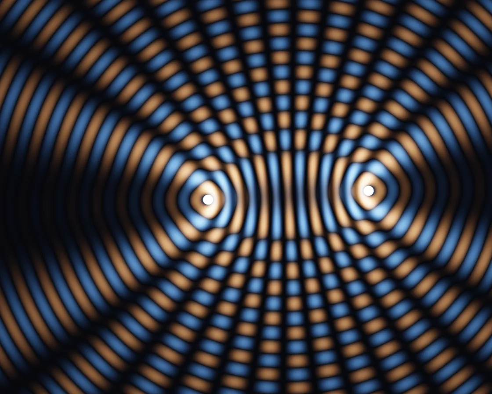

Wave interference
Wave interference is a WebGL effect: point sources summed as complex waves; fixed fringes, travelling crests. One plain JavaScript file with no dependencies; add it with npx motion-library add interference.

Open it live, tune it and copy the code
What is Wave interference?
Two ripple sources cross into bright bands and black nodal lines; move the cursor to drag one source.
How does Wave interference work?
Per pixel, each source adds a complex number with phase k · distance and amplitude 1/√distance; the sum’s size gives the fixed fringes, its rotated real part the live wave.
How do I add Wave interference to my website?
- In your project folder, run
npx motion-library add interference. It writesanimations/interference.js. Needs Node 18 or newer. - Import it and call it with a container element that has a size:
import fx from './animations/interference.js'; const stop = fx(document.querySelector('#hero')); - Call
stop()to clean up, for example when a component unmounts.
Every setting below is also a flag, so you can install it already tuned: npx motion-library add interference --sources 5.
What settings can I tweak?
| Setting | Flag | Default | Range | Step |
|---|---|---|---|---|
| Sources | --sources | 2 | 2 to 5 | 1 |
| Waves per height | --waves | 16 | 4 to 40 | 1 |
| Speed | --speed | 1 | 0 to 3 | 0.05 |
Specifications
- Renderer
- WebGL
- Category
- Generative & math
- Dependencies
- None
- File size
- 6.3 KB, unminified
- Interactive
- Yes: it responds to the pointer
- Reduced motion
- Respects prefers-reduced-motion
- Licence
- MIT-0: use it anywhere, no credit needed
Source code
// Two-source interference: each source sends out circular waves, and at every pixel their contributions are added
// as complex numbers (a phase k·d for the distance d to each source, an amplitude falling as 1/√d). The size of that
// sum is the time-averaged brightness: it draws the fixed hyperbolic fringes, bright where crests meet crests and
// black along the nodal lines where crest meets trough. Rotating the sum by the clock (its real part) gives the live
// wave itself, crests warm and troughs cool, sliding outwards along the fringes. The pointer moves the first source.
const PARAMS = { sources: 2, waves: 16, speed: 1 };
export default function (stage) {
const canvas = document.createElement('canvas');
canvas.style.cssText = 'position:absolute;inset:0;width:100%;height:100%;display:block';
stage.append(canvas);
const gl = canvas.getContext('webgl2', { antialias: false });
if (!gl) { stage.textContent = 'This needs WebGL2.'; return () => canvas.remove(); }
const reduce = matchMedia('(prefers-reduced-motion: reduce)').matches;
const vs = `#version 300 es
in vec2 p; void main() { gl_Position = vec4(p, 0, 1); }`;
const fs = `#version 300 es
precision highp float; out vec4 o;
uniform vec2 R, M; uniform float T, D, MA, u_sources, u_waves, u_speed;
float hash(vec2 p) { return fract(sin(dot(p, vec2(127.1, 311.7))) * 43758.5453); }
vec2 hash2(vec2 p) { return fract(sin(vec2(dot(p, vec2(127.1, 311.7)), dot(p, vec2(269.5, 183.3)))) * 43758.5453); }
float noise(vec2 p) { vec2 i = floor(p), f = fract(p); f = f * f * (3. - 2. * f);
return mix(mix(hash(i), hash(i + vec2(1, 0)), f.x), mix(hash(i + vec2(0, 1)), hash(i + 1.), f.x), f.y); }
float fbm(vec2 p) { float s = 0., a = .5; mat2 m = mat2(1.6, 1.2, -1.2, 1.6); for (int i = 0; i < 5; i++) { s += a * noise(p); p = m * p; a *= .5; } return s; }
void main() {
vec2 p = (gl_FragCoord.xy - .5 * R) / R.y;
float k = 6.2832 * u_waves; // waves per stage height
float N = floor(u_sources + .5);
vec2 S[5];
S[0] = M;
for (int i = 1; i < 5; i++) {
float a = float(i) * 2.4 + T * .08 * (mod(float(i), 2.) * 2. - 1.);
S[i] = vec2(cos(a) * .32 * R.x / R.y * .6, sin(a) * .26);
}
if (N < 2.5) S[1] = vec2(-.12 + .06 * sin(T * .13), -.05 + .05 * cos(T * .17)); // two sources: the partner stays near the middle
vec2 z = vec2(0); float dots = 0.;
for (int i = 0; i < 5; i++) {
if (float(i) >= N) break;
float d = length(p - S[i]);
float amp = 1. / sqrt(.02 + d);
float ph = k * d;
z += amp * vec2(cos(ph), sin(ph));
dots += smoothstep(.012 + 1.5 / R.y, .012, d);
}
z /= N * 2.2;
float I = dot(z, z); // time-averaged intensity: the standing fringes
float w = dot(z, vec2(cos(T * 3.), sin(T * 3.))); // the live wave
vec3 warm = vec3(1., .55, .25), cool = vec3(.25, .55, 1.);
vec3 col = vec3(.015, .017, .03);
col += (w > 0. ? warm : cool) * abs(w) * sqrt(I) * 1.5; // weighted by the envelope: nodal lines go black
col += vec3(.9, .92, 1.) * pow(I, 2.) * .25;
col = 1. - exp(-col * 1.6);
col = mix(col, vec3(1), clamp(dots, 0., 1.));
o = vec4(col, 1);
}`;
const sh = (t, s) => { const x = gl.createShader(t); gl.shaderSource(x, s); gl.compileShader(x); if (!gl.getShaderParameter(x, gl.COMPILE_STATUS)) throw new Error(gl.getShaderInfoLog(x)); return x; };
const prog = gl.createProgram(); gl.attachShader(prog, sh(gl.VERTEX_SHADER, vs)); gl.attachShader(prog, sh(gl.FRAGMENT_SHADER, fs)); gl.bindAttribLocation(prog, 0, 'p'); gl.linkProgram(prog);
if (!gl.getProgramParameter(prog, gl.LINK_STATUS)) throw new Error(gl.getProgramInfoLog(prog));
gl.useProgram(prog);
gl.bindBuffer(gl.ARRAY_BUFFER, gl.createBuffer()); gl.bufferData(gl.ARRAY_BUFFER, new Float32Array([-1, -1, 3, -1, -1, 3]), gl.STATIC_DRAW);
gl.enableVertexAttribArray(0); gl.vertexAttribPointer(0, 2, gl.FLOAT, false, 0, 0);
const U = {}; ['R', 'M', 'T', 'D', 'MA', 'u_sources', 'u_waves', 'u_speed'].forEach(n => U[n] = gl.getUniformLocation(prog, n));
let dpr = 1;
const resize = () => { dpr = Math.min(devicePixelRatio, 2); canvas.width = (stage.clientWidth || 1) * dpr | 0; canvas.height = (stage.clientHeight || 1) * dpr | 0; gl.viewport(0, 0, canvas.width, canvas.height); };
const ro = new ResizeObserver(resize); ro.observe(stage); resize();
// the pointer, in shader space (units of stage height, origin at the centre, y up); an idle "ghost" takes over
// when nobody is pointing, so the card is never static
let tx = 0, ty = 0, mx = 0, my = 0, ma = 0, lastMove = -1e9, gt = 0;
const toLocal = e => { const b = canvas.getBoundingClientRect(); return [(e.clientX - b.left - b.width / 2) / b.height, (b.height / 2 - (e.clientY - b.top)) / b.height]; };
const onMove = e => { [tx, ty] = toLocal(e); lastMove = performance.now(); };
const onLeave = () => { lastMove = -1e9; };
const onDown = e => { onMove(e); };
canvas.addEventListener('pointermove', onMove); canvas.addEventListener('pointerdown', onDown); canvas.addEventListener('pointerleave', onLeave);
let raf, t = 0, last = performance.now();
function frame(now) {
const dt = Math.min(0.05, (now - last) / 1000); last = now;
t += dt * PARAMS.speed * (reduce ? 0.05 : 1);
const live = now - lastMove < 2500, asp = canvas.width / canvas.height;
if (!reduce) gt += dt;
if (!live) { tx = asp * 0.3 * Math.sin(gt * 0.41) + 0.06 * Math.sin(gt * 1.3); ty = 0.24 * Math.sin(gt * 0.67 + 1.2); }
const k = 1 - Math.exp(-dt * (live ? 14 : 3));
mx += (tx - mx) * k; my += (ty - my) * k; ma += ((live ? 1 : 0) - ma) * (1 - Math.exp(-dt * 4));
gl.uniform2f(U.R, canvas.width, canvas.height); gl.uniform1f(U.T, t); gl.uniform1f(U.D, dpr);
gl.uniform2f(U.M, mx, my); gl.uniform1f(U.MA, ma);
gl.uniform1f(U.u_sources, PARAMS.sources);
gl.uniform1f(U.u_waves, PARAMS.waves);
gl.uniform1f(U.u_speed, PARAMS.speed);
gl.drawArrays(gl.TRIANGLES, 0, 3);
raf = requestAnimationFrame(frame);
}
raf = requestAnimationFrame(frame);
return () => { cancelAnimationFrame(raf); ro.disconnect(); canvas.removeEventListener('pointermove', onMove); canvas.removeEventListener('pointerdown', onDown); canvas.removeEventListener('pointerleave', onLeave); gl.getExtension('WEBGL_lose_context')?.loseContext(); canvas.remove(); };
}